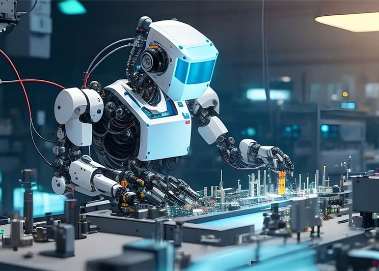

00. Wprowadzenie
Przemysł Wysokich Technologii (PWT) to sektor gospodarki, który skupia się na produkcji zaawansowanych technologicznie produktów i usług, wykorzystujących najnowsze osiągnięcia nauki i techniki. Jest to dziedzina, która często wymaga dużych inwestycji w badania i rozwój, a także wysokiej specjalizacji w zakresie wiedzy technicznej i inżynieryjnej. Wprowadzenie do tego sektora może być fascynujące ze względu na jego dynamiczny charakter i ogromny wpływ na rozwój społeczny, gospodarczy i technologiczny.
01. Przemysł IT i Oprogramowanie
Przemysł IT i oprogramowanie w Polsce rozwija się dynamicznie, stając się jednym z
wiodących sektorów gospodarczych w kraju. Polska jest obecnie uznawana za jednego
z kluczowych graczy na europejskiej scenie IT, przyciągając talenty z całego świata
i przyciągając inwestycje zagraniczne.Znaczenie tego sektora jest trudne do
przecenienia, ponieważ przekłada się ono na rozwój innych branż poprzez dostarczanie
innowacyjnych rozwiązań technologicznych. Polskie firmy IT nie tylko świadczą
usługi outsourcingu, ale także rozwijają własne innowacyjne produkty i usługi.
Sztuczna inteligencja, analiza danych, cybersecurity oraz Internet rzeczy (IoT)
to tylko niektóre z obszarów, w których polskie firmy odnoszą sukcesy.
02. Biotechnologia i Farmaceutyka
W Polsce, sektor biotechnologiczny i farmaceutyczny jest dynamicznie rozwijający się,
przyciągając liczne firmy, które inwestują w badania nad innowacyjnymi rozwiązaniami
w zakresie leków, terapii genowych oraz technologii medycznych. Te firmy prowadzą
zaawansowane badania, wykorzystując najnowsze osiągnięcia naukowe, aby opracować nowe
leki i terapie, które mogą pomóc w leczeniu różnych chorób oraz poprawić jakość życia
pacjentów. Inwestycje w ten sektor są kluczowe dla postępu w medycynie, ponieważ
umożliwiają opracowywanie bardziej skutecznych i bezpiecznych terapii, które mogą leczyć
nawet najbardziej skomplikowane schorzenia.
03. Energetyka Odnawialna
W ostatnich latach Polska intensyfikuje swoje działania w kierunku rozwijania energii
odnawialnej, skupiając się głównie na energii wiatrowej, słonecznej oraz biomasy.
Inwestycje w te technologie mają kluczowe znaczenie dla osiągnięcia celów zrównoważonego
rozwoju, redukcji emisji CO2 oraz zwiększenia niezależności energetycznej kraju. Poprzez
rozwój energii odnawialnej, Polska dąży do ograniczenia swojej zależności od paliw kopalnych
oraz do zmniejszenia negatywnego wpływu na środowisko naturalne, co jest szczególnie istotne
w kontekście globalnych wyzwań związanych z zmianami klimatycznymi.
04. Przemysł Lotniczy i Kosmiczny
Polski przemysł lotniczy i kosmiczny rośnie w znaczeniu na arenie międzynarodowej, wdrażając
coraz bardziej zaawansowane rozwiązania technologiczne. Od produkcji komponentów do budowy
samolotów po satelity, Polska coraz śmielej współpracuje z globalnymi potentatami w przemyśle
lotniczym i kosmicznym. Ta współpraca umożliwia dostarczanie wysokiej jakości rozwiązań
technologicznych
na skalę światową, przyczyniając się do wzrostu polskiego eksportu oraz kreowania innowacyjnego
wizerunku
kraju. Polskie firmy, wykazując się wysokim poziomem zaawansowania technologicznego i
inżynieryjnego,
zdobywają coraz większe zaufanie partnerów zagranicznych i uczestniczą w projektach o znaczącym
znaczeniu globalnym.
05. Automatyzacja i Robotyka
Polska dynamicznie rozwija swój udział w przemyśle automatyzacji i robotyki, stając się istotnym
graczem na arenie międzynarodowej. Dostarczając zaawansowane technologie dla różnych sektorów,
takich jak produkcja, logistyka czy opieka zdrowotna, Polska przyczynia się do transformacji
tych branż poprzez zwiększenie efektywności, precyzji i elastyczności procesów. Polskie firmy
specjalizujące się w automatyzacji i robotyce wykazują innowacyjność i wysoki poziom zaawansowania
technologicznego, co przyciąga uwagę klientów z całego świata. Wdrażane przez nie rozwiązania nie
tylko zwiększają konkurencyjność przedsiębiorstw, ale także przyczyniają się do rozwoju gospodarki
poprzez generowanie nowych miejsc pracy oraz tworzenie ekosystemu wspierającego rozwój innowacyjnych
technologii.
